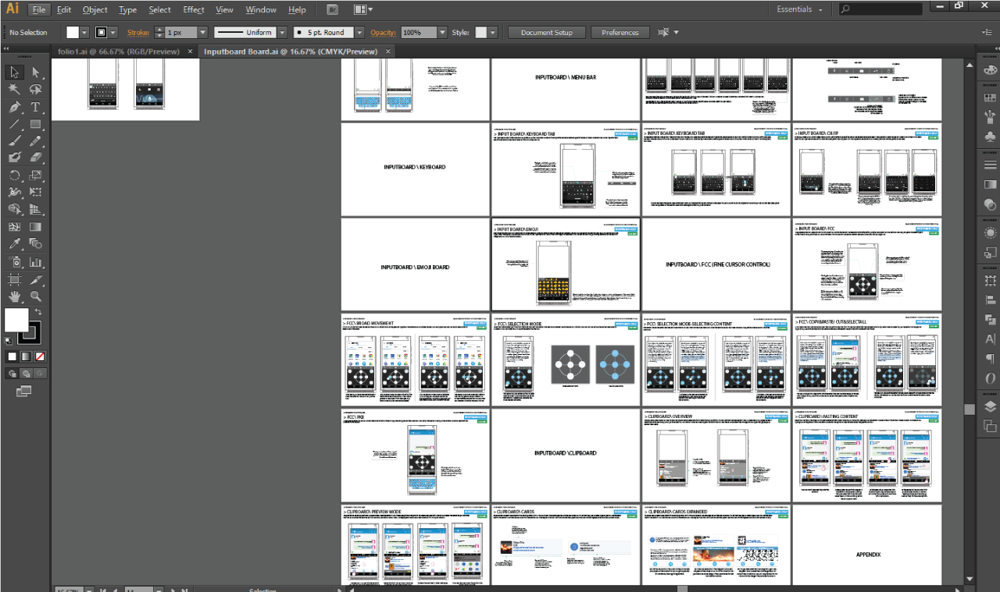
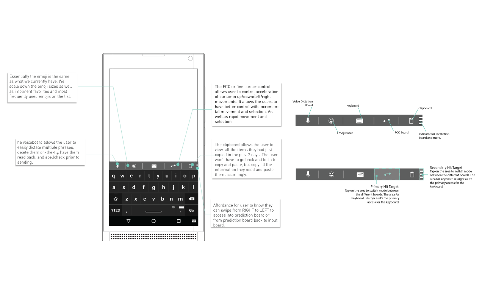
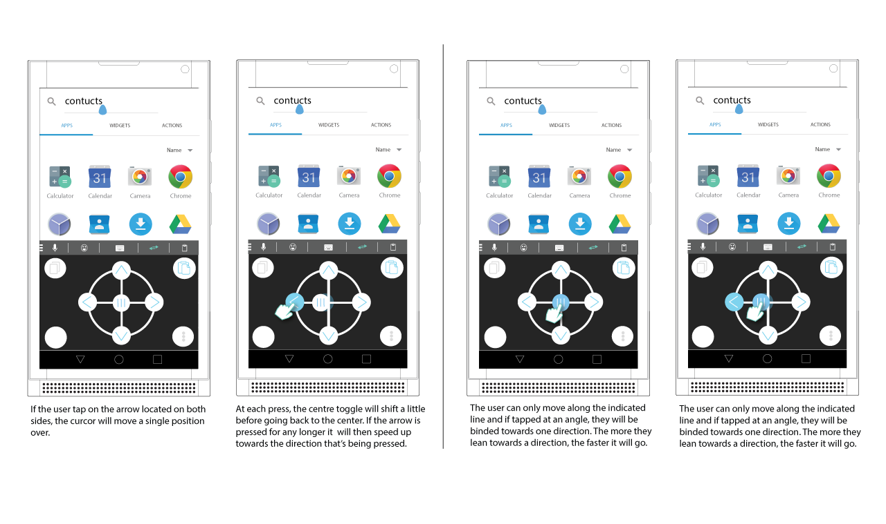
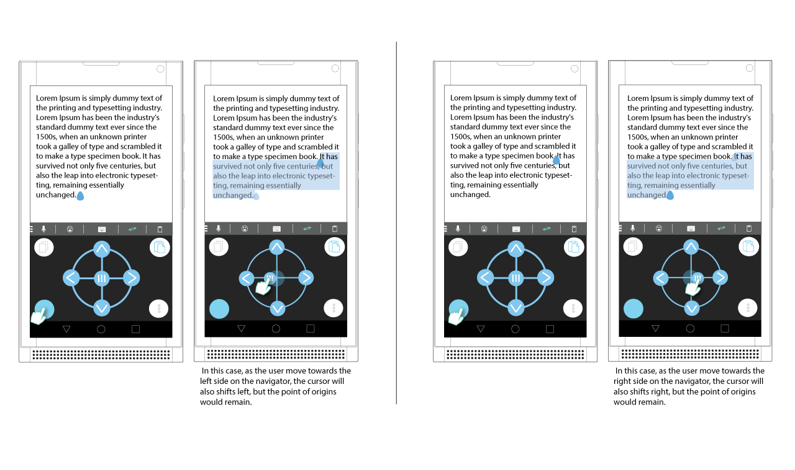
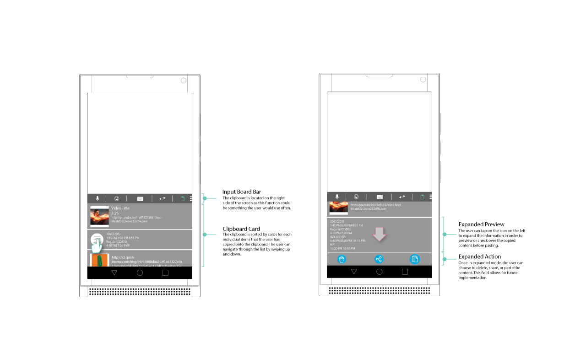

BlackBerry
UX Design, Interaction Design, User Testing
While I was interning at BlackBerry, I was fortunate enough to be task with a major feature for one of their latest phone release. BlackBerry has a long history with keyboards and some could argue the keyboard was what made the company so successful in the first place. However, during the latter half of the 2000s, with the surge of touchscreen phones, the keyboard began to fade. The concept of the input board is to go back to the roots of what made the company so special.
- 1. Productivity
- 2. Usability
- 3. Ease of Access
The idea of the input board is to ease every day user’s input method. Whether it’s copying items to clipboards or selecting materials to copy, the input board’s purpose is to increase productivity for the users. Once the user accessed into the input board, they are given five choices. The choice being, Voice board, the Emoji board, the main Keyboard, the FCC board, and the clip board. The main keyboard would be the primary board the user would see and through the various other input boards, they user can do various actions depending on the situation.
can do various actions depending on the situation. Through initial research conducted by researchers at BlackBerry, the users have shown interest in having an input board that focuses on productivity action such as selecting long paragraphs and copying them into a clipboard. They would also want other features that are used quite often such as emojis and voice control. With that in mind, the design rationale behind implementing the input board was to redefine productivity with a digital keyboard.
The purpose of the FCC fine cursor control is to allow the users to freely select and deselect objects with better precision and allows them to do actions such as copy or paste. The essential part of this mode is to help minimize the user’s effort when trying to select huge body of content and work in harmony with our clipboard. The design of the FCC was based on the mouse version of a cursor control when the roller is clicked. The circular design gives the user a sense of familiarity from game controllers but we bound the user’s navigation to the each of the direction buttons.
The primary four other buttons located on the side of the wheel consists of a copy button, a paste button, a selection mode activation button, and a more button for future implementations. The copy button allows the users to copy quickly as they select items while the paste button would place the selected item into the clipboard. The user would have to enter selection mode first prior to copying items.
Next, we looked at other ways which the keyboard could potentially help the users to be more productive. We analyze on what most actions a user would do on their phone while creating content or sending emails and we found that users often finds themselves having to go back and forth from an application in order to copy contents and paste it into another application. The next feature aims to help minimize that process by creating an accessible clipboard which the user could copy multiple items into the board and paste it with a few taps.
The clipboard mode allows the users to freely manipulate and choose which items they wish to paste within all the content that they had copied in the last seven days. The purpose serves as something for the user to copy multiple items back to back before entering the mode to paste. This minimize the users time since they won’t have to copy an item, open the app and paste and do it over again.
From conducting usability testing sessions, we found that power users didn’t enjoy the delay that was part of the activation mode for the Input board feature. “It takes too long,” was a phrase that users often used to describe the activation process. In finding a method that could satisfy power user, we developed a method that allows the users to access the input board switcher more rapidly, without sacrificing screen real estate. By swiping up with two fingers, they can invoke the switcher, and dismiss it by swiping down with two fingers.
However, with accelerator feature being a hidden feature, on-boarding must be displayed during the first time of activation in order to let the users know how to enter and leave the mode quickly.
This feature was recently release in the Keyone as part of BlackBerry's last phone and new feature. I was given permission to display some of the above wireframes but for more indepth details in regards to the project, please feel free to contact me via email. Thank you!